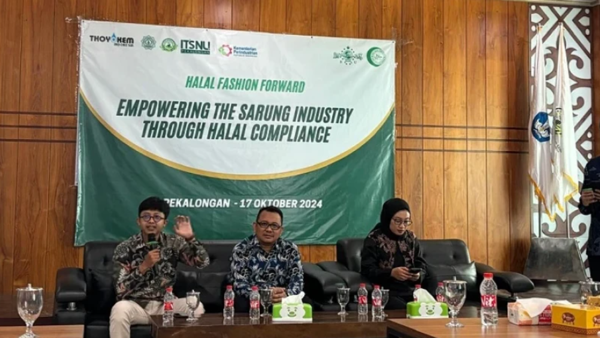
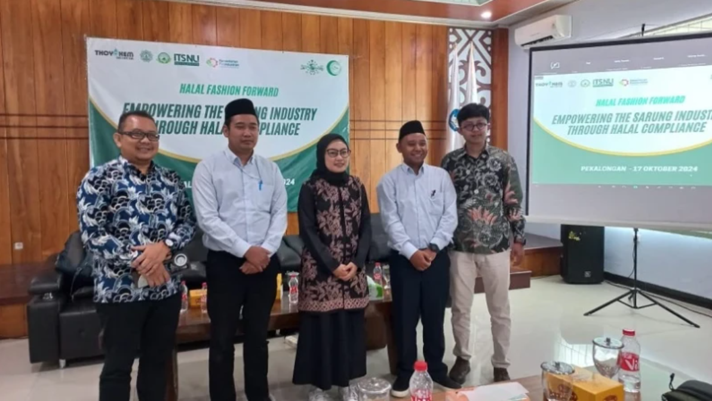
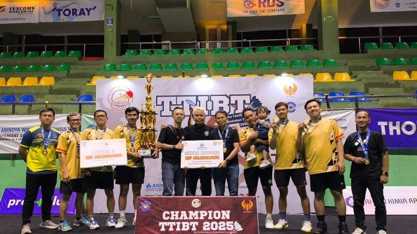
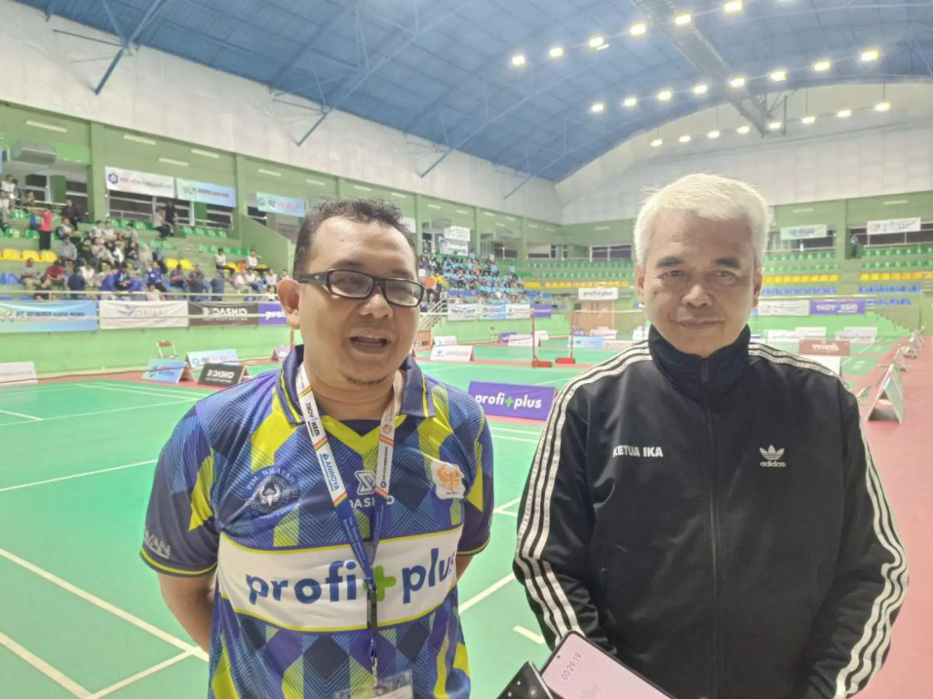
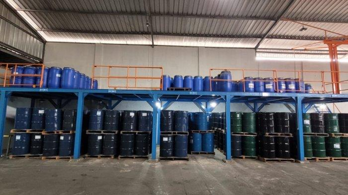
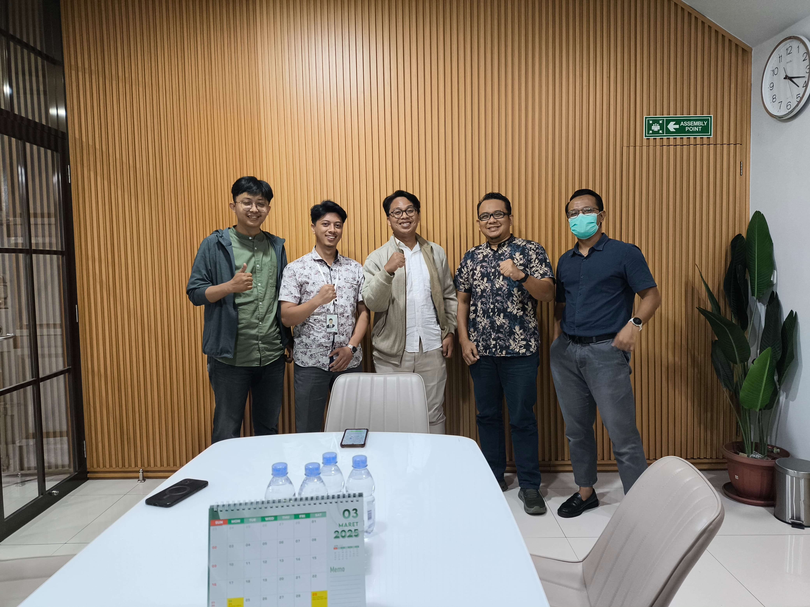

Butuh
Bantuan?
Silakan isi formulir ini untuk memulai percakapan — kami akan segera menghubungi Anda kembali.
Berita kami

World Halal Center Nahdlatul Ulama (WHCNU) melalui LPH Halal Nusantara mendorong percepatan sertifikasi halal untuk barang gunaan seperti pakaian, mukena, dan sarung, bukan hanya produk makanan. Dalam acara Halal Fashion Forward di ITSNU Pekalongan, WHCNU menegaskan pentingnya pendampingan bagi pelaku usaha agar produk yang digunakan dalam ibadah memenuhi standar halal secara menyeluruh, sejalan dengan amanat UU No. 33/2014 tentang Jaminan Produk Halal.
Read more
Fashion Halal Initiative, yang digagas sejak tahun lalu, berkomitmen memastikan produk fesyen dan barang gunaan—seperti kain, sarung, dan pakaian—memenuhi standar halal menyeluruh dari hulu hingga hilir dengan kerja sama BPJPH, MUI, dan ormas Islam; mereka telah menyusun standar nasional dan mengejar pengakuan global demi mendukung industri tekstil nasional serta memperkuat proteksi terhadap importasi, menjadikan sertifikasi halal sebagai sarana untuk menyelamatkan dan memperkuat industri dalam negeri menjelang kewajiban sertifikasi halal barang gunaan tahun 2026.
Read more
Puluhan industri tekstil — sebanyak 29 perusahaan dari hulu hingga hilir — memperkuat sinergi dan kerja sama melalui ajang The Textile Industry Badminton Tournament (TTIBT) yang digelar di GOR KONI Bandung pada 8–9 Februari 2025. Ajang olahraga ini tidak hanya menjadi sarana silaturahmi antarindustri, tetapi juga bertujuan membangun rantai pasok tekstil nasional yang lebih solid dan kolaboratif. Ratusan peserta, termasuk dari berbagai daerah seperti Jawa Barat dan Jawa Timur, serta perwakilan pemerintah dan asosiasi tekstil, ambil bagian dalam kegiatan yang diharapkan dapat rutin diselenggarakan dan membuka peluang kemitraan lebih jauh.
Read more
Puluhan industri tekstil dan produk tekstil (TPT) dari berbagai tingkat—sebanyak 29 perusahaan, asosiasi, dan perwakilan pemerintah—mengadakan silaturahmi melalui kompetisi The Textile Industry Badminton Tournament (TTIBT) di Bandung pada 8–9 Februari 2025. Kejuaraan ini bertujuan memperkuat hubungan antar pelaku industri, membangun rantai pasok nasional, serta membuka peluang kerjasama baru, bahkan ke luar negeri. Inisiatif ini menjadi ruang informal bagi operator dan pemimpin perusahaan untuk berinteraksi, bertukar pikiran, dan mendorong ide-ide guna meningkatkan kebangkitan industri tekstil domestik.
Read more
Tren fesyen halal di Indonesia semakin moncer—didorong oleh pilihan gaya hidup yang sadar nilai etis dan kualitas tinggi. Pemerintah dan pelaku industri berlomba memanfaatkan momentum ini: Kemenperin tengah mendorong IKM agar inovatif dan ekspor fesyen Muslim ke pasar global, sementara inisiatif seperti Indonesia Global Halal Fashion (IGHF) terus menegaskan agar negara kita menjadi kiblat modest fashion dunia. Angka belanja gaya berbusana Muslim global diperkirakan meningkat dari US$318 miliar pada 2022 menjadi US$428 miliar pada 2027—sebuah peluang emas bagi Indonesia untuk bersinar. Jadi, siapkah fesyen halal Tanah Air melesat lebih tinggi lagi?
Read more
Thoyokem Indonesia kini melangkah ke panggung fesyen halal dengan meluncurkan 64 bahan kimia tekstil bersertifikasi halal—produk inovatif yang dipersiapkan khusus untuk memenuhi tuntutan syariah sepanjang rantai produksi, dari pewarna hingga zat bantu finishing. Komitmen ini ditegaskan langsung oleh Direktur Utama Harum Siti Bandarum, yang menyatakan bahwa inovasi berbasis syariat dan keberlanjutan bisa berjalan bersamaan—sebuah sinyal kuat bahwa industri bahan baku Indonesia siap menembus pasar global halal. Bayangkan: setiap helai kain muslim kini bisa melewati proses kimiawi yang terjamin kehalalannya—tentunya membangkitkan rasa ingin tahu: seberapa besar potensi lonjakan ekspor dan pergeseran standardisasi industri yang akan terjadi berikutnya?
Read moreSilakan isi formulir ini untuk memulai percakapan — kami akan segera menghubungi Anda kembali.